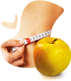

Уникальный продукт
MagicApple - это уникальный плод. Мы выращиваем и собираем плоды в горах Шотландии. Именно этот сорт яблок в сочетании с редким видом специально выведенного червя, является самым эффективным средством для достижения поставленной цели. Вы можете обрести любовь, похудеть или омолодиться. Именно наличие червя в яблоке является знаком качества и важной составляющей продукта, определяющего его полезные свойства.
- 